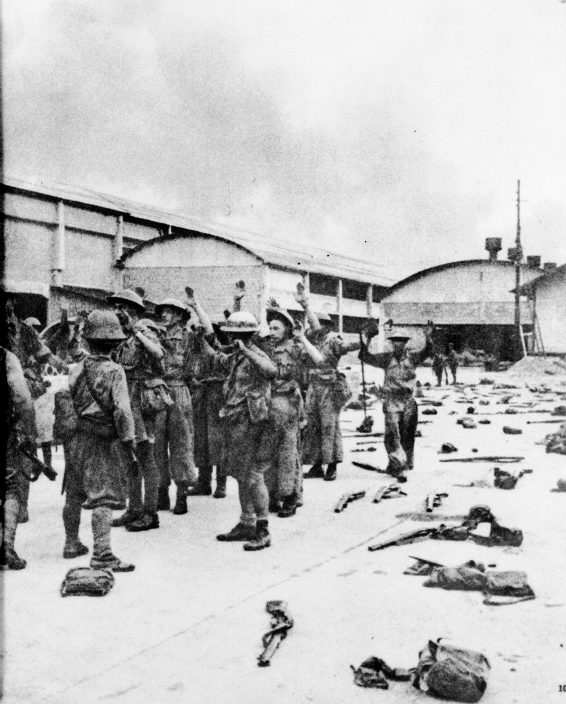
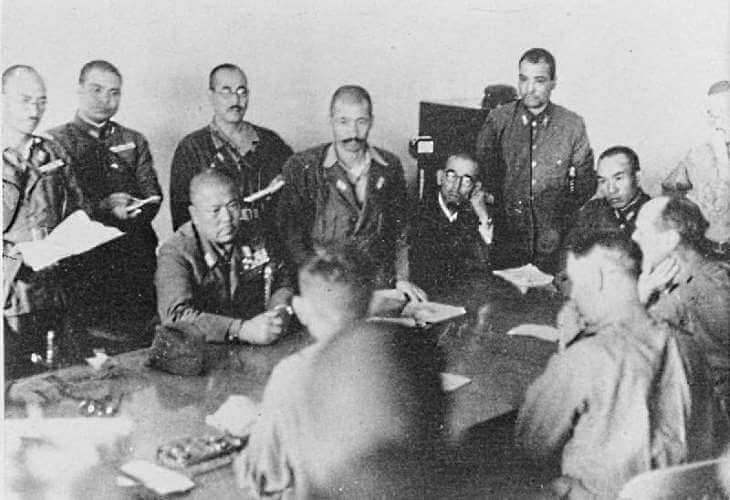
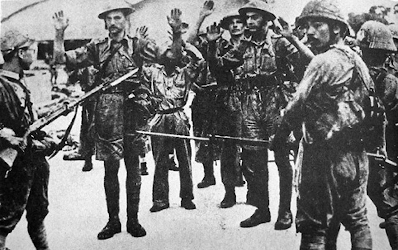

Britain Surrenders Singapore 15 Feb 1942, 6:20pm
Lt-General Arthur Percival surrenders to General Yamashita at the Ford Factory in Bukit Timah.
One would think the British had lost the war in Singapore due to the Japaneses military and numerical prowess, but did you know that with just a little more confidence, they could have won?
By 15 February 1942, the situation in Singapore made it nearly impossible for the Allied forces to defend. Resources were no longer in their hands, and people were dying as they spoke.
There was only enough water for 24 hours due to cracks in the water channels, and only three days worth of rations.
Furthermore, the main reservoirs were all in Japanese hands.
Casualties from enemy bombing were increasing faster than the speed in which bodies could be collected and buried.
Deserters, refugees, and looters were roaming around the city.
Some post war analysis convey frustration and disappointment towards the Britishs weakened confidence, that had cost everyone Singapore.
You see, the Japanese forces were not as strong and formidable as everyone believed, it was just a facade that had successfully fooled everyone.
While the British were depleting their artillery stock as if it were infinite, Yamashitas artillery stockpiles were approaching dangerously low levels.
Some Japanese themselves believed a few more days of resistance from the British might have been enough for the British to turn the tide and prevail.
The depleting ammunition was so concerning that the Japanese forces were down to fewer than 100 rounds per gun, which forced them to limit their counter-battery fire on British and Commonwealth guns.
This was a test towards Yamashitas problem solving abilities.
The next few days were critical, as it determined the fate of Singapore, and for Yamashita, his credibility.
While a few officers shamefully suggested dropping the assault and retreating to Malaya as to properly reequip, Yamashita was determined to wrap up their win in an immediate and resolute manner.
It is theorized that behind his hastiness to win, was a weighing personal and political pressure to occupy Singapore, due to his own precarious political status back in Japan.
As such, resolute in his determination to secure a quick win, he sent Percival a request for surrender, and warned him of the cost the civilians in Singapore would have to bear, should he be forced into a full, unrestrained assault.
He further reminded Percival that without fresh water, a catastrophic and unsolvable epidemic was all but inevitable, which leaves surrender as the sole sensible course.
In response, there was no response.
Percival refused to entertain and answer Yamashitas surrender request.

Offended and shaking in his pants, Yamashita played a bluff.
To convince Percival that surrender was his only, and best option, Yamashita threatened an artillery bombardment, bluffing with ammunition stockpiles though already dangerously depleted.
On the morning of 15 February, at 9.30am, the helpless Percival arranged a conference with his senior commanders at the Fort Canning Bunker.
He proposed two options: go all out on an immediate counter-attack to reacquire the reservoirs and the military food depots around Bukit Timah, or surrender.
Following a candid and thorough exchange of opinions, all present unanimously agreed that a counter-attack would be devastating and deadly, in which Percival opted for surrender.
However, post-war analysis has reported that a counter-attack held a chance of success.
The Japaneses supply line was falling apart and their military units were also running out of ammunition.
But given the situation, fooled and overwhelmed with inadequacy, they decided to concede to the Japanese with heavy hearts.
Later that day, Lt. Col. Ichiji Sugita, one of Yamashitas officers, met a British party seeking terms of surrender and posed, “Do you wish to surrender?”
The British interpreter, Captain Cyril H.D. Wild, concurred.
Then, Yamashita ordered that Percival and his surrender party make their way to the Japanese headquarters located at Ford Factory at Bukit Timah.

Aware that the upcoming hours would mark the end of the Britishs fight, Percival issued orders to get rid of all secret and technical equipment, ciphers, codes, secret documents and heavy guns.
Through hours of tense negotiations, Yamashita consistently demanded an immediate and unconditional surrender, although Percival was doing his best to stall and prolong negotiations until the next day.
Yamashita was aware of the urgency of his own weakness and did not want any delay.
During this time, Yamashita demanded that the Japanese Rising Sun Flag be raised over the Cathay Building, the tallest building in Singapore.
Negotiations ended with Percival formally surrendering at about 6pm.
After their ignominious surrender at Singapore, British soldiers, their hands raised above their heads, are marched off into wretched captivity.
Many of them did not survive, while others endured four years of harsh treatment at the hands of their Japanese captors.

Under the terms of the surrender:
1. Hostilities were to cease at 8.30pm that evening, with all military forces in Singapore surrendering unconditionally.
2. All Commonwealth forces would remain in position and disarm within an hour, though the British were permitted to maintain a force of 1,000 armed men to prevent looting until relieved by the Japanese.
3. Yamashita accepted full responsibility for the lives of the civilians in Singapore.
After news of the British surrendered, some people in Singapore rushed to erase traces of their past to bury their histories of anti-Japanese activity.
Tan Wah Meng, a volunteer for the Medical Auxiliary Service, recounted that people burned records to avoid them eventually getting caught by the Japanese.
His father was one of the handful who faced repercussions because of a damning piece of photograph.
“It happened that somebody did not destroy a photograph of the committee. My fathers photograph was inside and the name inside. Thats why the Japanese looked for our family, you see. They got hold of that photograph.”
Tan, his father and elder brother were later brought in for an interrogation by the Japanese.
While Tan was released one or two hours later, the remaining two spent a week and a month imprisoned, respectively.
In addition, his father suffered extreme torture during his detainment.
Ang Seah San, the bookkeeper and member of an Air Raid Precautions (ARP) unit, said that he demolished all physical semblances of the ARP, so as not to leave any traces for the Japanese.
“The wardens and I… we decided to destroy all records, logbooks... uniforms, helmets in order that we could deny of any connections with the previous government.”
“Three days after our meeting, we were told that the British army surrendered, unconditionally to the enemy... We called the meeting because we got instruction from headquarters that we have got to be disbanded.”
“We advised all the other wardens that, your uniform, your uniform, your helmet all must be buried or burned away.”
After the war eventually ended, Yamashita reflected, “I felt if we had to fight in the city we would be beaten.”
He went on to add that his strategy at Singapore was a bluff, “a bluff that worked.”